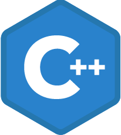
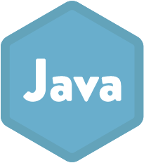
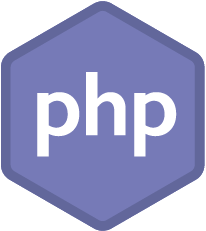
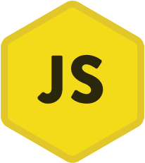

Works
佐々木 将和
1991年2月、兵庫県出身。大阪工業大学を卒業後、特定派遣会社でエンジニア職に従事。 療養中にWebの開発に関心を持ち、2024年からPHPに興味を持ち、現在では学習としてLaravelで 勤怠管理Webシステムを製作している。
1991年
島根県で生まれる。
幼いころからレゴ、プラモデルに興味を持ち、学生時代はアニメ、ゲームにはまり、イラストを よく書いていた。幼稚園児から中学生までピアノを習っていたので音楽にも興味が強かった。
2009年
大阪工業大学に入学。
音楽、コンピュータグラフィックス(CG)に興味が強かったため情報メディア学科を専攻にした。 プログラミング、ネットワーク、アルゴリズムとデータ構造など、情報技術の基礎知識と3DCG、 音響、インターフェースなどメディア技術の学習も尾もなった。CGに興味があったため部活は CG部に入部し2Dイラストを描いていた、。
2013年～2021年
アウトソーシング会社を4社経験
多様な技術を身に着けながらエンジニアとして長く働けることに魅力を感じ、 アウトソーシング会社に入社。取引先と打ち合わせを重ねながら上流工程から 下流工程まで開発を経験した。
2022年～2026年
準備期間
家庭の事情で実家に度々戻り、手伝いをしながら、どこからでもアプリケーションのチェックが できるWeb技術に興味を持ちPHPの学習を始める。就労支援でWeb勤怠管理アプリケーション開発した。 開発が中止になるが、フレームワークの学習も続け、 勤怠アプリケーションをLaravelに置き換えて、機能の充実を行っていた。
これから
これまでの経験を活かし、新たに技術を身に着け続け、多くの人の意見を吸収し ユーザー目線を忘れないバランスのいいエンジニアになりたいと思います。
Skills

C++
- 開発期間：
- 2年半
- 工程：
- 基本設計～保守

Java
- 開発期間：
- 3か月
- 工程：
- 改修
Oracle SQL
- 開発期間：
- 3か月
- 工程：
- 改修

PHP(Laravel)
- 開発期間：
- 1年(学習)
- 工程：
- 開発

Javascript
- 開発期間：
- 6か月(学習)
- 工程：
- 開発